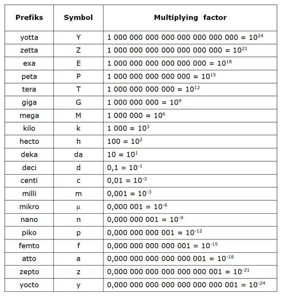

The SI System
The International System of Units (abbreviated SI from the French phrase, Système International d'Unités) is the most widely used system of units. It is the most common system for everyday commerce in the world, and is almost universally used in the realm of science. In 1960, the SI was developed from a subset of the existing Metre-Kilogram-Second systems of units (MKS), rather than the older Centimetre-Gram-Second system (CGS). Various new units were created at that time. The SI is not static, it is a living set of standards where units are created and definitions are modified with international agreement. The SI authority describes SI as the modern metric system where modern means post-1960. It is common for people to describe non-SI units as 'metric', although there is no authority that maintains a current definition of metric system other than SI. With a few exceptions (such as draught beer sales in the United Kingdom) the system is legally being used in every country in the world and many countries do not maintain definitions of other units. In the United States the use of SI is increasing but is still limited. In the United Kingdom, conversion to metric units is official policy but not yet complete. Those countries that still give recognition to non-SI units (e.g. the US and UK) have defined many of the modern units in terms of SI units.
History
The units and unit magnitudes of the metric system which became the SI were improvised piecemeal from everyday physical quantities starting in the mid-18th century. Only later were they moulded into an orthogonal coherent decimal system of measurement.The metric system was developed from 1791 onwards by a committee of the French Academy of Sciences, commissioned to create a unified and rational system of measures. The group, which included preeminent French men of science, used the same principles for relating length, volume, and mass that had been proposed by the English clergyman John Wilkins in 1668 and the concept of using the Earth's meridian as the basis of the definition of length, originally proposed in 1670 by the French abbot Mouton.
n 1832, the German mathematician Carl Friedrich Gauss, assisted by Wilhelm Weber, implicitly defined the second as a base unit when he quoted the Earth's magnetic field in terms of millimetres, grams, and seconds. Prior to this, the strength of the Earth's magnetic field had only been described in relative terms. The technique used by Gauss was to equate the torque induced on a suspended magnet of known mass by the Earth's magnetic field with the torque induced on an equivalent system under gravity. The resultant calculations enabled him to assign dimensions based on mass, length and time to the magnetic field